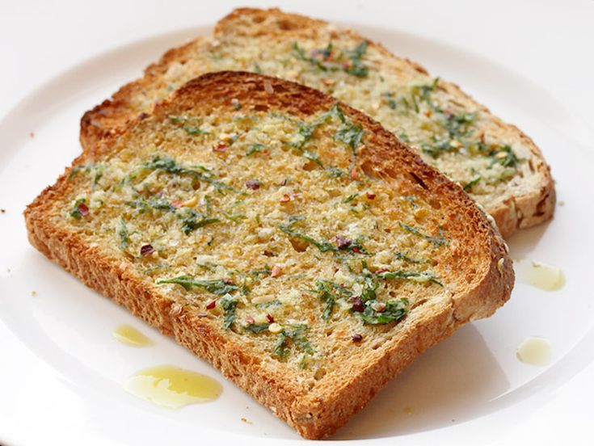

Garlic Toast

Garlic toast, perfect as a substitute for crackers in a cheese platter.
- Prep time: 5 min
- Cook time: 10-15 min
Ingredients:
- Any kind of firm, thin, sliced bread (Sourdough, Baguette)
- Garlic-infused olive oil (Optionally substitute butter or regular olive oil)
- Garlic salt
Steps:
- Preheat oven to 180°C (350°F).
- Place sliced bread on a baking tray lined with aluminium foil.
- Generously coat bread slices with garlic-infused olive oil.
- Season with garlic salt, to taste.
- Bake for 10-15 minutes or until crunchy throughout.
- Serve with cheese, charcuterie, pickles, dips, or to accommodate a soup.